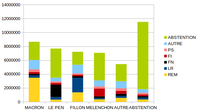

Report de voix entre Présidentielle et législatives

Dans un billet précédent, je publiais les estimations de trajectoires de vote entre le référendum de 2005 et le premier tour de la Présidentielle de 2017 obtenues par "inférence écologique". J'ai appliqué la même méthode au report du premier tour de la présidentielle au premier des législatives. Pour plus de détails sur la méthode, je vous renvoie vers l'article en question. En attendant, voici les résultats - en gardant en tête que la marge d'erreur est de plusieurs points :